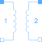

IdealTransformerIdeal transformer |

|
Information
This information is part of the Modelica Standard Library maintained by the Modelica Association.
The ideal transformer is a two-port circuit element without magnetization. Voltages and currents are ideally transformed:
v1 = v2*n; i2 = -i1*n;
where n is a real number called the turns ratio.
Parameters (1)
| n |
Value: 1 Type: Real Description: Ratio of primary to secondary voltage |
|---|
Connectors (4)
| pin_p1 |
Type: PositivePin Description: Primary positive pin |
|
|---|---|---|
| pin_p2 |
Type: PositivePin Description: Secondary positive pin |
|
| pin_n1 |
Type: NegativePin Description: Primary negative pin |
|
| pin_n2 |
Type: NegativePin Description: Secondary negative pin |
Components (4)
| v1 |
Type: ComplexVoltage Description: Voltage drop of side 1 |
|
|---|---|---|
| i1 |
Type: ComplexCurrent Description: Current into side 1 |
|
| v2 |
Type: ComplexVoltage Description: Voltage drop of side 2 |
|
| i2 |
Type: ComplexCurrent Description: Current into side 2 |
Used in Examples (1)
|
Modelica.Electrical.QuasiStatic.SinglePhase.Examples Example of transformer with short circuit impedance, transmission resistances and load |